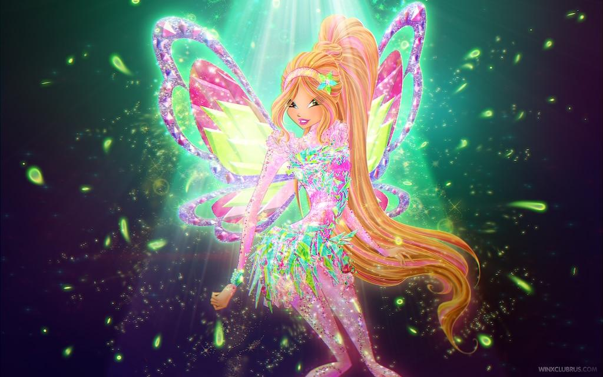

FAIRY OF STARDUST01 / THE DREAMER
Lumi Fairy of Stardust
Lumi loves to sketch constellations on her sneakers and turn daydreams into dazzling star trails. Her translucent rose-and-lilac wings shimmer like a night sky, and her wishspark magic creates tiny guiding lights when someone needs a little courage. Her look: a starry lavender jacket, soft pink layers, and silver moon clips.
Stardust magicRose & lilac wingsDreamy trendsetter